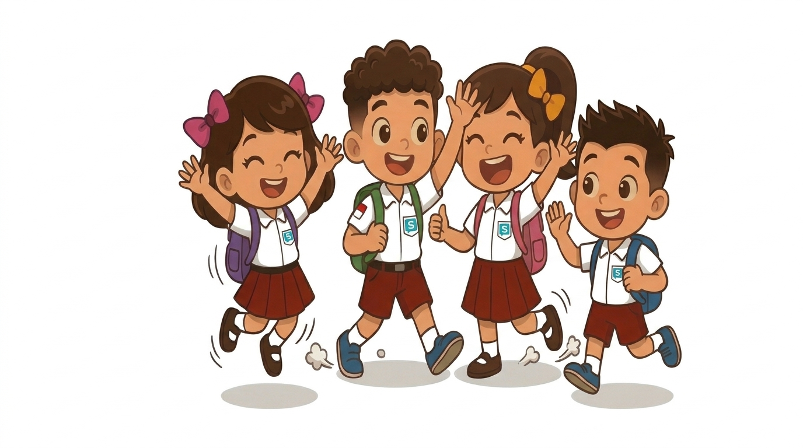

PEMELIHARAAN SISTEM · SPAS1 v2.1.2 Release App
Sistem Sedang Dalam Pemeliharaan Terjadwal
Sistem sedang menyinkronkan database untuk mendukung kelancaran operasional aplikasi.

85% Selesai
Estimasi: ± 30 Menit